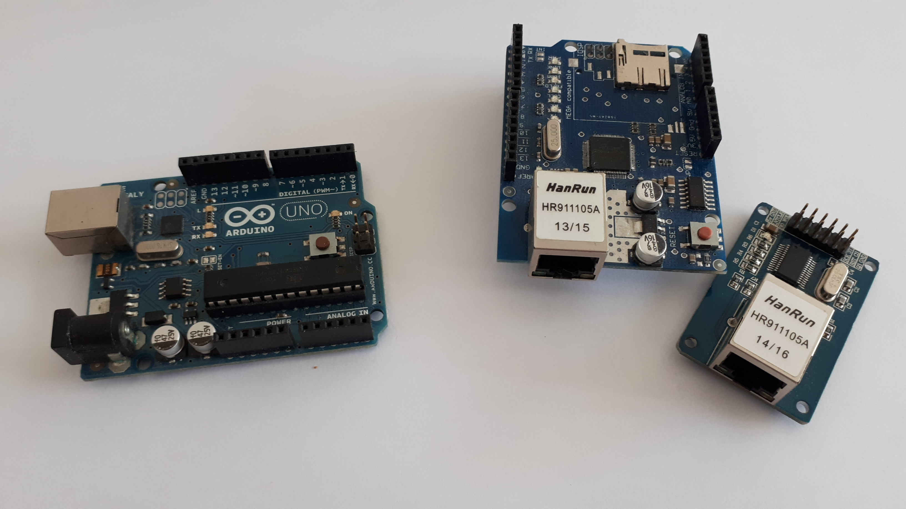
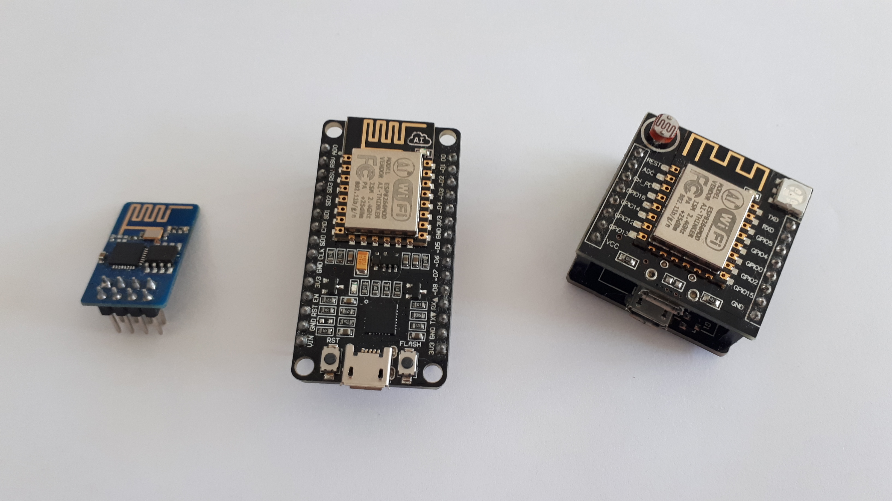
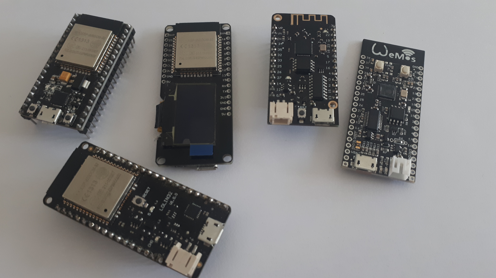
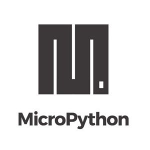
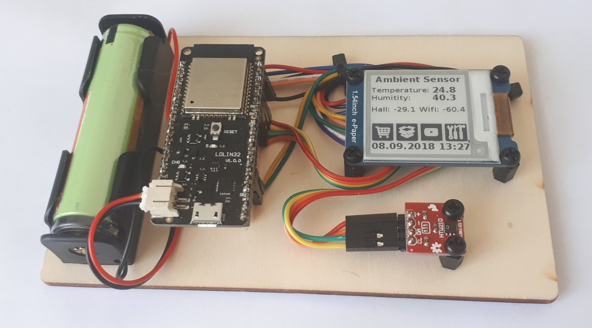
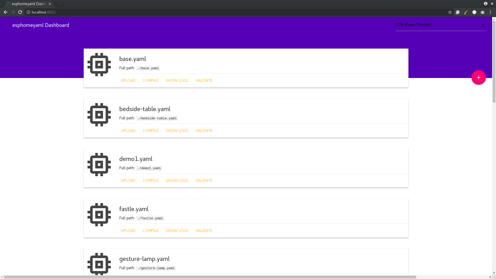

class: center, middle # Programmieren ohne zu programmieren ### Fabian Affolter Maker Faire Zürich 2018 --- .header[] # Agenda 1. Einführung 2. Wie funktionert es heute? 3. Wie geht es effizienter? --- # Über mich - B. Sc. CS BUAS, B. Sc. ME BUAS - [affolter engineering](http://affolter-engineering.ch/) - Home Assistant Developer - Fedora/Alpine Linux Contributor - Fedora Security Lab/Fedora Security Lab Test bench --- .header[] # Später für Fragen und ähnliches - **IRC**: faffolter (FreeNode) - **Mail**: mail@fabian-affolter.ch - **Jabber**: fab@jabber.dk - **Web**: [http://fabian-affolter.ch](http://fabian-affolter.ch) - **Discord**: fabaff - **Twitter**: @fabaff --- .header[] # Internet of things .left-column[ - Lampen - Schalter - Thermostat - Wasserkocher - Zahnbürste - Kameras - Staubsauger ] .right-column[ - Waschmaschine - Bewässerung - Schlösser - Temperatur - Türen - Tierfütterung - ... ] ---  ---  ---  --- .header[] # Welche Sprache? <table cellpadding="20"> <col width="25%"> <col width="25%"> <col width="25%"> <col width="25%"> <tr> <td>C/C++</td> <td></td> <td><img src="images/lua.svg" alt="Lua" style="width:200px;"></td> <td><img src="images/javascript.png" alt="Javascript" style="width:200px;"></td> </tr> </table> --- class: middle, center <table> <col width="30%"> <col width="30%"> <col width="30%"> <tr> <td><img src="images/arduino.png" alt="Arduino IDE" style="width:200px;"></td> <td></td> <td> Sming</td> </tr> <tr> <td></td> <td width="300px"><img src="images/platformio.svg" alt="Platform.io" style="width:200px;">Platform.io</td> <td>etc...</td> </tr> </table> --- class: middle, center .header[] # Programmieren ist ... --- .header[] # Vorgefertigte Firmware - ESPEasy/uPyEasy - Sonoff-Tasmota - Espurna --- .header[] # esphomelib - Entwickelt von Otto Winter ([@OttoWinter_](https://twitter.com/OttoWinter_)) - C++ - MQTT, OTA, Deep Sleep, Wifi, Bluetooth, Web server, RESTful API - Sensoren und Aktoren - und noch ein paar Goodies... --- class: middle, center Full disclosure: # Made for Home Assistant --- <font size="5"> .left-column[ ```c #include <ESP8266WiFi.h> #include <PubSubClient.h> const char* ssid = "SSID"; const char* password = "PASSWORD"; const char* mqtt_server = "BROKER"; WiFiClient espClient; PubSubClient client(espClient); long lastMsg = 0; char msg[50]; int value = 0; void setup_wifi() { delay(10); Serial.println(); Serial.print("Connecting to "); Serial.println(ssid); WiFi.begin(ssid, password); while (WiFi.status() != WL_CONNECTED) { delay(500); Serial.print("."); } randomSeed(micros()); Serial.println(""); Serial.println("WiFi connected"); Serial.println("IP address: "); Serial.println(WiFi.localIP()); } void callback(char* topic, byte* payload, unsigned int length) { Serial.print("Message arrived ["); Serial.print(topic); Serial.print("] "); for (int i = 0; i < length; i++) { Serial.print((char)payload[i]); } Serial.println(); if ((char)payload[0] == '1') { digitalWrite(BUILTIN_LED, LOW); } else { digitalWrite(BUILTIN_LED, HIGH); } } ``` ] .right-column[ ```c void reconnect() { while (!client.connected()) { Serial.print("Attempting MQTT connection..."); String clientId = "ESP8266Client-"; clientId += String(random(0xffff), HEX); if (client.connect(clientId.c_str())) { Serial.println("connected"); client.publish("outTopic", "hello world"); client.subscribe("inTopic"); } else { Serial.print("failed, rc="); Serial.print(client.state()); Serial.println(" try again in 5 seconds"); delay(5000); } } } void setup() { pinMode(BUILTIN_LED, OUTPUT); Serial.begin(115200); setup_wifi(); client.setServer(mqtt_server, 1883); client.setCallback(callback); } void loop() { if (!client.connected()) { reconnect(); } client.loop(); long now = millis(); if (now - lastMsg > 2000) { lastMsg = now; ++value; snprintf (msg, 75, "hello world #%ld", value); Serial.print("Publish message: "); Serial.println(msg); client.publish("outTopic", msg); } } ``` ] </font> .footnote[mqtt_esp8266.ino: https://github.com/knolleary/pubsubclient/blob/master/examples/mqtt_esp8266/mqtt_esp8266.ino] --- # esphomeyaml Vereinfacht: Konfigurieren in YAML, was Ding tun soll. .left-column[ ```yaml mqtt: broker: '192.168.0.30' ``` ] .right-column[ ```yaml esphomeyaml: name: gesture_lamp platform: ESP32 board: nodemcu-32s wifi: ssid: 'ssid' password: 'password' mqtt: broker: '192.168.0.30' username: 'USERNAME' password: 'MQTT_PASSWORD' ``` ] .footnote[MQTT Client Component: https://esphomelib.com/esphomeyaml/components/mqtt.html] --- # Over The Air-Aktualisierungen ```yaml ota: ``` # Web interface ```yaml web_server: ``` # Deep sleep ```yaml deep_sleep: run_duration: 10s sleep_duration: 10min ``` --- # Beispiel ESP32 Development Board mit e-Ink Display und HTU21D - Web interface - MQTT - Zeit per NTP --- ```yaml esphomeyaml: name: weather_station platform: ESP32 board: esp32dev wifi: ssid: 'SSID' password: 'PASSWORD' mqtt: broker: '192.168.0.30' username: '' password: '' logger: ota: web_server: port: 80 i2c: sda: 21 scl: 22 scan: False ``` --- ```yaml spi: clk_pin: 16 mosi_pin: 33 binary_sensor: - platform: status name: "Weather Station Status" sensor: - platform: esp32_hall name: "Hall" update_interval: 15s id: hall - platform: wifi_signal name: "Wifi Signal" id: signal update_interval: 15s - platform: htu21d temperature: name: "Temperature" id: temperature humidity: name: "Humidity" id: humidity update_interval: 15s ``` --- ```yaml switch: - platform: restart name: "Weather Station Restart" time: - platform: sntp id: time servers: - 0.pool.ntp.org - 1.pool.ntp.org - 2.pool.ntp.org font: - file: "/usr/share/fonts/dejavu/DejaVuSans-Bold.ttf" id: big_font size: 20 - file: "/usr/share/fonts/dejavu/DejaVuSans-Bold.ttf" id: small_font size: 16 image: - file: "logo.png" id: logo resize: 200x200 ``` --- ```yaml display: - platform: waveshare_epaper cs_pin: 27 dc_pin: 17 busy_pin: 35 reset_pin: 32 model: 1.54in rotation: 90 full_update_every: 30 lambda: |- it.print(10, 0, id(big_font), "Ambient Sensor"); it.printf(2, 40, id(small_font), "Temperature:"); it.printf(130, 40, id(big_font), "%.1f", id(temperature).value); it.printf(2, 60, id(small_font), "Humitity:"); it.printf(130, 60, id(big_font), "%.1f", id(humidity).value); it.printf(2, 90, id(small_font), "Hall: %.1f", id(hall).value); it.printf(102, 90, id(small_font), "Wifi: %.1f", id(signal).value); it.image(0, 120, id(logo)); it.strftime(2, 170, id(big_font), "%d.%m.%Y %H:%M", id(time).now()); ``` ---  --- # Anderer Sensor? .left-column[ ```yaml sensor: - platform: htu21d temperature: name: "Living Room Temperature" humidity: name: "Living Room Humidity" update_interval: 15s ``` ] .right-column[ ```yaml sensor: - platform: bmp085 temperature: name: "Living Room Temperature" pressure: name: "Living Room Pressure" update_interval: 15s ``` ] --- class: middle ```bash $ esphomeyaml weather-station.yaml run ``` --- .middle-column[ ```yaml esphomeyaml: name: gesture_lamp platform: ESP32 board: nodemcu-32s wifi: ssid: 'SSID' password: 'PASSWORD' [...] light: - platform: fastled_clockless chipset: WS2812B pin: GPIO33 num_leds: 12 name: "Gesture Lamp" ``` .center[] ] --- <font size="7"> .middle-column[ ```c #include "esphomelib/application.h" using namespace esphomelib; void setup() { // ========== AUTO GENERATED CODE BEGIN =========== App.set_name("gesture_lamp"); App.init_log(); App.init_wifi("SSID", "PASSWORD"); auto *ota = App.init_ota(); ota->start_safe_mode(); auto *mqtt = App.init_mqtt("BROKER", 1883, "", ""); mqtt->set_discovery_info("home", true); App.init_web_server(80); App.make_restart_switch("Restart Gesture Lamp"); App.make_status_binary_sensor("Status Gesture Lamp"); auto fast_led_clockless_light = App.make_fast_led_light("Gesture Lamp"); fast_led_clockless_light.fast_led->add_leds<WS2812B, 33>(12); // =========== AUTO GENERATED CODE END ============ // ========= YOU CAN EDIT AFTER THIS LINE ========= App.setup(); } void loop() { App.loop(); delay(1); } ``` ] </font> --- class: middle, center ...der Rest erledigt Platform.io ---  --- # Installation ```bash $ pip install esphomeyaml ``` - Container (Docker) - Home Assistant Add-on --- class: middle, center [https://esphomelib.com/esphomeyaml/](https://esphomelib.com/esphomeyaml/)